import squidpy as sq
import scanpy as sc
from pathlib import Path
import numpy as np
from scipy.sparse import issparse, csr_matrix
from liana.method import singlecellsignalr, connectome, cellphonedb, natmi, logfc, cellchat, geometric_meanPractical 6: Cell-Cell Communication
Author: Francesca Drummer
In this notebook we will cover different methods to revocer cell-cell communication (CCC) in spatial transcriptomics.
- non-spatial CCC testing with spatial DE genes or post-processing filter (e.i. spatial distance) using CellPhoneDB
- MISTy
To reduce the environment dependencies we will use the LIANA+ implementation of the methods. Please notice that the original tools might offer more functionalities. For that reason we will always link to the original publication and GitHub repository.
0. Download data
PATH = "/home/icb/francesca.drummer/1-Projects/"# load adata
adata = sc.read_h5ad(Path(PATH, 'xenium_mouse_ad_annotated_rotated.h5ad'))
adataAnnData object with n_obs × n_vars = 350209 × 347
obs: 'cell_id', 'transcript_counts', 'control_probe_counts', 'control_codeword_counts', 'unassigned_codeword_counts', 'total_counts', 'cell_area', 'nucleus_area', 'region', 'cell_labels', 'condition', 'time', 'batch_key', 'leiden_res0_25', 'leiden_res0_5', 'leiden_res1', 'cell_types', 'sample'
var: 'gene_ids', 'feature_types', 'genome'
uns: 'cell_types_colors', 'dea_leiden_res0_25', 'dendrogram_leiden_res0_25', 'leiden', 'leiden_res0_25_colors', 'leiden_res0_5_colors', 'leiden_res1_colors', 'neighbors', 'umap'
obsm: 'X_pca', 'X_umap', 'spatial'
obsp: 'connectivities', 'distances'print(adata.X[:2,:2]) (1, 0) 1.0adata.layers['counts'] = adata.X# Normalization to the median
sc.pp.normalize_total(adata)
# Freeman-Tukey square root transform
assert issparse(adata.X)
sqrt_X = adata.X.sqrt()
# Create a new sparse matrix for X + 1
X_plus_1 = adata.X + csr_matrix(np.ones(adata.X.shape))
# Calculate the square root of (X + 1)
sqrt_X_plus_1 = X_plus_1.sqrt()
adata.layers['median_ft'] = sqrt_X + sqrt_X_plus_10. Introduction to LIANA+
LIANA+ is a toolbox in Python for various dissociated, multimodal and spatially informed cell-cell communication tools [Dimitrov et al., 2024].
First we install the package and observe which methods are implemented in LIANA+. Each method relies on different assumptions and returns a different ligand-receptor score. Usually, one score for the strength of the interaction (magnitude) and a score reflecting the specifivity of a interaction to a pair of cell identities.
import liana as li
li.mt.show_methods()| Method Name | Magnitude Score | Specificity Score | Reference | |
|---|---|---|---|---|
| 0 | CellPhoneDB | lr_means | cellphone_pvals | Efremova, M., Vento-Tormo, M., Teichmann, S.A.... |
| 0 | Connectome | expr_prod | scaled_weight | Raredon, M.S.B., Yang, J., Garritano, J., Wang... |
| 0 | log2FC | None | lr_logfc | Dimitrov, D., Türei, D., Garrido-Rodriguez, M.... |
| 0 | NATMI | expr_prod | spec_weight | Hou, R., Denisenko, E., Ong, H.T., Ramilowski,... |
| 0 | SingleCellSignalR | lrscore | None | Cabello-Aguilar, S., Alame, M., Kon-Sun-Tack, ... |
| 0 | Rank_Aggregate | magnitude_rank | specificity_rank | Dimitrov, D., Türei, D., Garrido-Rodriguez, M.... |
| 0 | Geometric Mean | lr_gmeans | gmean_pvals | CellPhoneDBv2's permutation approach applied t... |
| 0 | scSeqComm | inter_score | None | Baruzzo, G., Cesaro, G., Di Camillo, B. 2022. ... |
| 0 | CellChat | lr_probs | cellchat_pvals | Jin, S., Guerrero-Juarez, C.F., Zhang, L., Cha... |
Most CCC tools identify LR interaction. For this they rely on a extracting LR pairs from databases. There are diverse databases but LIANA+ has a consensus database that uses LR that are overlapping across databases.
First, we need to ensure that there are LR-pairs present in the data to be detected for communication.
print(li.resource.show_resources())
resource_name = "mouseconsensus" # Replace with the desired resource name if needed
lr_pairs = li.resource.select_resource(resource_name)
lr_pairs['baccin2019', 'cellcall', 'cellchatdb', 'cellinker', 'cellphonedb', 'celltalkdb', 'connectomedb2020', 'consensus', 'embrace', 'guide2pharma', 'hpmr', 'icellnet', 'italk', 'kirouac2010', 'lrdb', 'mouseconsensus', 'ramilowski2015']| ligand | receptor | |
|---|---|---|
| 31371 | Dll1 | Notch1 |
| 31372 | Dll1 | Notch2 |
| 31373 | Dll1 | Notch4 |
| 31374 | Dll1 | Notch3 |
| 31375 | Nrg2 | Erbb2_Erbb3 |
| ... | ... | ... |
| 35355 | Serpina1a | Lrp1 |
| 35356 | Serpina1b | Lrp1 |
| 35357 | Serpina1c | Lrp1 |
| 35358 | Serpina1d | Lrp1 |
| 35359 | Serpina1e | Lrp1 |
3989 rows × 2 columns
def lr_pairs_in_adata(adata):
genes_in_dataset = set(adata.var_names) # Replace `adata.var_names` with your dataset's gene names if different
# Filter the ligand-receptor pairs for those present in your dataset
filtered_lr_pairs = lr_pairs[
lr_pairs['ligand'].isin(genes_in_dataset) & lr_pairs['receptor'].isin(genes_in_dataset)
]
# Count the number of ligand-receptor pairs present in your dataset
num_lr_pairs = len(filtered_lr_pairs)
# Display the count
print(f"Number of ligand-receptor pairs present in the dataset: {num_lr_pairs}")lr_pairs_in_adata(adata)Number of ligand-receptor pairs present in the dataset: 16In the following chapter, we will work with the CellPhoneDB method from LIANA+.
1. CellPhoneDB: non-spatial CCC
We will cover two possible appraoches to integrate spatial information into non-spatially aware CCC tools, as shown by li.mt.show_methods().
- Select spatially variable genes as input.
- Input all genes into the
Spatially-variable gene selection
We use Moran’s I score as a measure of spatial autocorrelation to identify spatially variable genes.
For more information see: Chapter 29: Spatially variable genes from single-cell best practices.
sub_adata = adata[(adata.obs['time'] == '5_7') & (adata.obs['condition'] == 'TgCRND8')]
sub_adataView of AnnData object with n_obs × n_vars = 58681 × 347
obs: 'cell_id', 'transcript_counts', 'control_probe_counts', 'control_codeword_counts', 'unassigned_codeword_counts', 'total_counts', 'cell_area', 'nucleus_area', 'region', 'cell_labels', 'condition', 'time', 'batch_key', 'leiden_res0_25', 'leiden_res0_5', 'leiden_res1', 'cell_types', 'sample'
var: 'gene_ids', 'feature_types', 'genome'
uns: 'cell_types_colors', 'dea_leiden_res0_25', 'dendrogram_leiden_res0_25', 'leiden', 'leiden_res0_25_colors', 'leiden_res0_5_colors', 'leiden_res1_colors', 'neighbors', 'umap'
obsm: 'X_pca', 'X_umap', 'spatial'
layers: 'counts', 'median_ft'
obsp: 'connectivities', 'distances'print(sub_adata.X[:5,:5]) (0, 2) 4.50828742980957
(1, 0) 2.081632614135742
(1, 2) 2.081632614135742
(2, 2) 2.6322579383850098
(4, 0) 1.2289156913757324
(4, 2) 2.457831382751465sq.gr.spatial_neighbors(sub_adata, n_neighs=30, coord_type="generic", key_added = 'neighs_based_spatial')
sq.gr.spatial_autocorr(sub_adata, connectivity_key = "neighs_based_spatial_connectivities", mode="moran", n_perms=50, genes=sub_adata.var_names)/home/icb/francesca.drummer/miniconda3/envs/ccc_liana/lib/python3.9/site-packages/squidpy/gr/_utils.py:194: ImplicitModificationWarning: Setting element `.obsp['neighs_based_spatial_connectivities']` of view, initializing view as actual.
100%|██████████| 50/50 [00:48<00:00, 1.03/s]sub_adata.uns["moranI"].head()| I | pval_norm | var_norm | pval_z_sim | pval_sim | var_sim | pval_norm_fdr_bh | pval_z_sim_fdr_bh | pval_sim_fdr_bh | |
|---|---|---|---|---|---|---|---|---|---|
| Nwd2 | 0.637334 | 0.0 | 0.000001 | 0.0 | 0.019608 | 0.000014 | 0.0 | 0.0 | 0.019665 |
| Ppp1r1b | 0.602092 | 0.0 | 0.000001 | 0.0 | 0.019608 | 0.000014 | 0.0 | 0.0 | 0.019665 |
| Mbp | 0.592759 | 0.0 | 0.000001 | 0.0 | 0.019608 | 0.000012 | 0.0 | 0.0 | 0.019665 |
| Slc17a7 | 0.575611 | 0.0 | 0.000001 | 0.0 | 0.019608 | 0.000012 | 0.0 | 0.0 | 0.019665 |
| Neurod6 | 0.573918 | 0.0 | 0.000001 | 0.0 | 0.019608 | 0.000012 | 0.0 | 0.0 | 0.019665 |
Subset data to only spatially variable genes and check that there are still LR pairs present.
sub_adata_svg = sub_adata[:, sub_adata.uns["moranI"]['I'] > 0.2]
sub_adata_svgView of AnnData object with n_obs × n_vars = 58681 × 115
obs: 'cell_id', 'transcript_counts', 'control_probe_counts', 'control_codeword_counts', 'unassigned_codeword_counts', 'total_counts', 'cell_area', 'nucleus_area', 'region', 'cell_labels', 'condition', 'time', 'batch_key', 'leiden_res0_25', 'leiden_res0_5', 'leiden_res1', 'cell_types', 'sample'
var: 'gene_ids', 'feature_types', 'genome'
uns: 'cell_types_colors', 'dea_leiden_res0_25', 'dendrogram_leiden_res0_25', 'leiden', 'leiden_res0_25_colors', 'leiden_res0_5_colors', 'leiden_res1_colors', 'neighbors', 'umap', 'neighs_based_spatial_neighbors', 'moranI'
obsm: 'X_pca', 'X_umap', 'spatial'
layers: 'counts', 'median_ft'
obsp: 'connectivities', 'distances', 'neighs_based_spatial_connectivities', 'neighs_based_spatial_distances'lr_pairs_in_adata(sub_adata_svg)Number of ligand-receptor pairs present in the dataset: 5sq.pl.spatial_scatter(sub_adata,
color=["Ppp1r1b", "Neurod6"],
shape=None)WARNING: Please specify a valid `library_id` or set it permanently in `adata.uns['spatial']`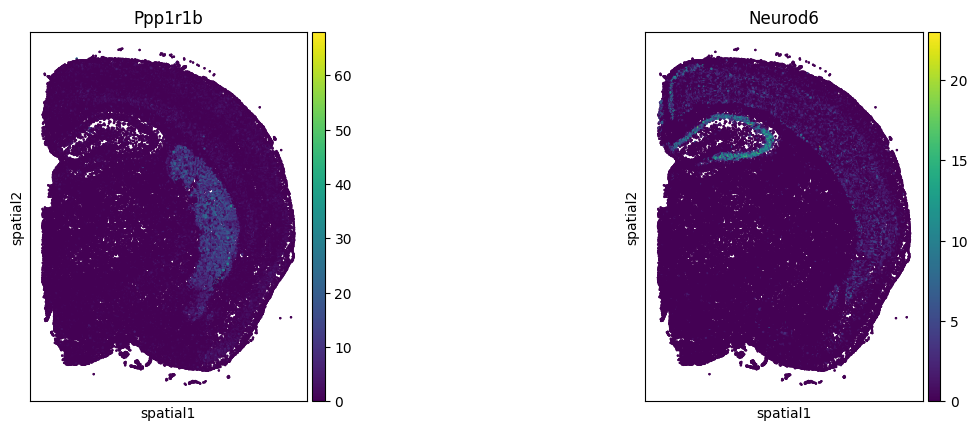
CellPhoneDB
cellphonedb(sub_adata_svg,
groupby='cell_types',
# NOTE by default the resource uses HUMAN gene symbols
resource_name='mouseconsensus',
expr_prop=0.1,
verbose=True,
use_raw = False,
layer = 'counts',
key_added='cpdb_res')Using resource `mouseconsensus`.
Using the `counts` layer!
/home/icb/francesca.drummer/miniconda3/envs/ccc_liana/lib/python3.9/site-packages/anndata/_core/anndata.py:522: FutureWarning: The dtype argument is deprecated and will be removed in late 2024.
39 samples of mat are empty, they will be removed.
/home/icb/francesca.drummer/miniconda3/envs/ccc_liana/lib/python3.9/site-packages/liana/method/_pipe_utils/_pre.py:153: FutureWarning: The default of observed=False is deprecated and will be changed to True in a future version of pandas. Pass observed=False to retain current behavior or observed=True to adopt the future default and silence this warning.
0.98 of entities in the resource are missing from the data.Generating ligand-receptor stats for 58681 samples and 6 features100%|██████████| 1000/1000 [00:04<00:00, 207.76it/s]
/home/icb/francesca.drummer/miniconda3/envs/ccc_liana/lib/python3.9/site-packages/liana/method/sc/_Method.py:266: ImplicitModificationWarning: Trying to modify attribute `._uns` of view, initializing view as actual.sub_adata_svg.uns['cpdb_res'].head()| ligand | ligand_complex | ligand_means | ligand_props | receptor | receptor_complex | receptor_means | receptor_props | source | target | lr_means | cellphone_pvals | |
|---|---|---|---|---|---|---|---|---|---|---|---|---|
| 3 | C1qa | C1qa | 3.718225 | 0.903226 | Cd93 | Cd93 | 0.207941 | 0.12677 | Microglia | Astrocytes | 1.963083 | 0.000 |
| 0 | C1qa | C1qa | 0.311218 | 0.202483 | Cd93 | Cd93 | 0.207941 | 0.12677 | Astrocytes | Astrocytes | 0.259579 | 0.000 |
| 5 | C1qa | C1qa | 0.194758 | 0.112398 | Cd93 | Cd93 | 0.207941 | 0.12677 | Oligodendrocytes | Astrocytes | 0.201350 | 0.645 |
| 4 | C1qa | C1qa | 0.183544 | 0.124688 | Cd93 | Cd93 | 0.207941 | 0.12677 | OPC | Astrocytes | 0.195742 | 0.657 |
| 2 | C1qa | C1qa | 0.139770 | 0.135632 | Cd93 | Cd93 | 0.207941 | 0.12677 | Inhibitory neurons | Astrocytes | 0.173855 | 1.000 |
my_plot = li.pl.tileplot(adata = sub_adata_svg,
fill='means',
label='props',
label_fun=lambda x: f'{x:.2f}',
top_n=20,
orderby='cellphone_pvals',
orderby_ascending=True,
source_labels=['Astrocytes', 'Excitatory neurons', 'Inhibitory neurons', 'Microglia', 'OPC', 'Oligodendrocytes'],
target_labels=['Astrocytes'],
uns_key='cpdb_res', # NOTE: default is 'liana_res'
source_title='Ligand',
target_title='Receptor',
figure_size=(8, 7)
)
my_plotFontsize 0.00 < 1.0 pt not allowed by FreeType. Setting fontsize = 1 pt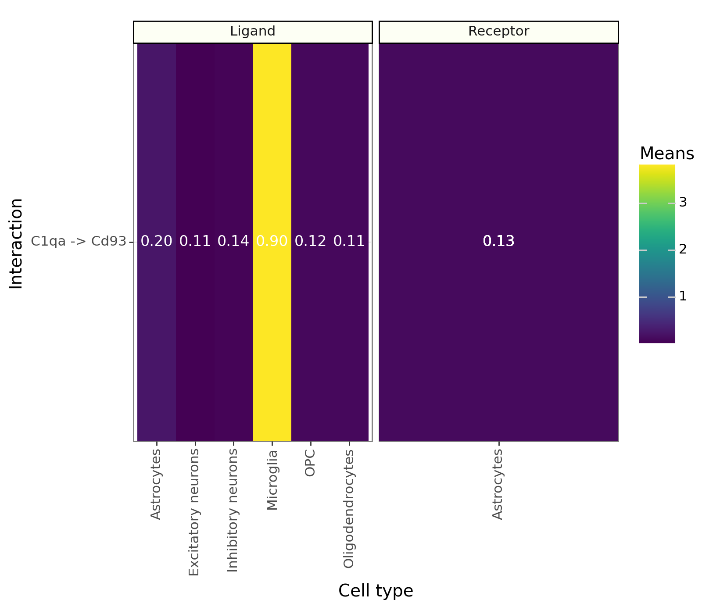
TODO: Plot genes in space to see whether they are visually close.
Change the expr_prop in the CellPhoneDB function and try out some other tools like CellChat. How does it effect the results?.
Compare the results for the healthy control or different time points. Do the CCC across cell types change?.
What could be an alternative post-hoc analysis instead of using spatially variable gene detection to have a spatially informed CCC?
3. MISTY
MISTy is a framework that helps understand how different features, such as genes or cell types interact with each other in space. For this MISTy uses so called views, each describing a different spatial context.

import scanpy as sc
import decoupler as dc
import plotnine as p9
import liana as li
# Import Helper functions needed to create MISTy objects
from liana.method import MistyData, genericMistyData, lrMistyData
#Import predefined single view models
from liana.method.sp import RandomForestModel, LinearModel, RobustLinearModel3.1 Estimate pathway activities
Before we run MISTy, let’s estimate pathway activities as a way to make the data a bit more interpretable. We will use decoupler-py with pathways genesets from PROGENy. See this tutorial for details.
progeny = dc.get_progeny(organism='mouse', top=500)Downloading annotations for all proteins from the following resources: `['PROGENy']`dc.run_mlm(
mat=adata,
net=progeny,
source='source',
target='target',
weight='weight',
verbose=True,
use_raw=False,
)Running mlm on mat with 350209 samples and 347 targets for 11 sources.100%|██████████| 36/36 [00:04<00:00, 7.39it/s]# extract progeny activities as an AnnData object
acts_progeny = li.ut.obsm_to_adata(adata, 'mlm_estimate')
acts_progenyAnnData object with n_obs × n_vars = 350209 × 11
obs: 'cell_id', 'transcript_counts', 'control_probe_counts', 'control_codeword_counts', 'unassigned_codeword_counts', 'total_counts', 'cell_area', 'nucleus_area', 'region', 'cell_labels', 'condition', 'time', 'batch_key', 'leiden_res0_25', 'leiden_res0_5', 'leiden_res1', 'cell_types', 'sample'
uns: 'cell_types_colors', 'dea_leiden_res0_25', 'dendrogram_leiden_res0_25', 'leiden', 'leiden_res0_25_colors', 'leiden_res0_5_colors', 'leiden_res1_colors', 'neighbors', 'umap'
obsm: 'X_pca', 'X_umap', 'spatial', 'mlm_estimate', 'mlm_pvals'
obsp: 'connectivities', 'distances'acts_progeny.var_namesIndex(['Androgen', 'Estrogen', 'JAK-STAT', 'MAPK', 'NFkB', 'PI3K', 'TGFb',
'TNFa', 'VEGF', 'WNT', 'p53'],
dtype='object')# Check how the pathway activities look like
for library_id in acts_progeny.obs["batch_key"].unique():
adata_subset = acts_progeny[acts_progeny.obs["batch_key"] == library_id]
print(f'Condition: {np.unique(adata_subset.obs["condition"])[0]} and time: {np.unique(adata_subset.obs["time"])[0]}')
sc.pl.spatial(
adata_subset,
color=['Androgen', 'Estrogen', 'TGFb', 'TNFa', 'VEGF', 'WNT', 'p53'],
cmap='RdBu_r',
spot_size=10,
)Condition: TgCRND8 and time: 2_5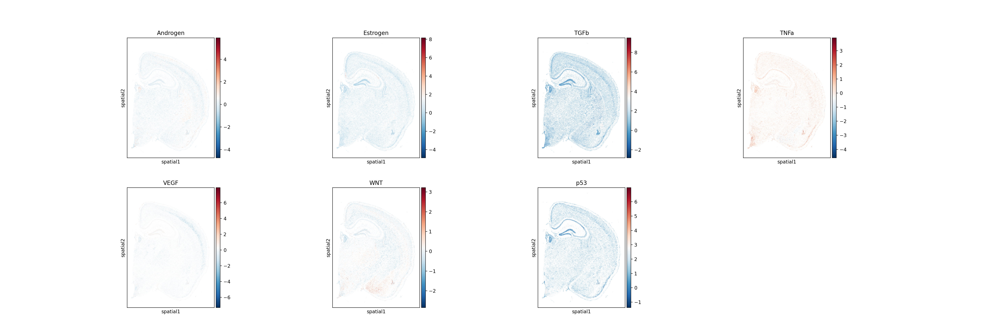
Condition: TgCRND8 and time: 5_7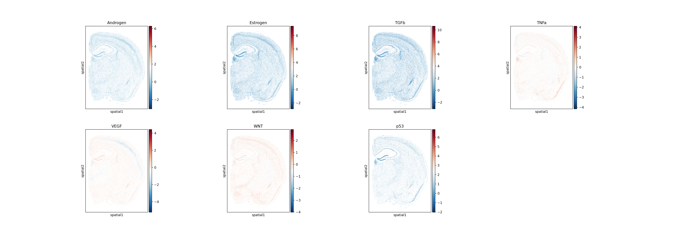
Condition: TgCRND8 and time: 17_9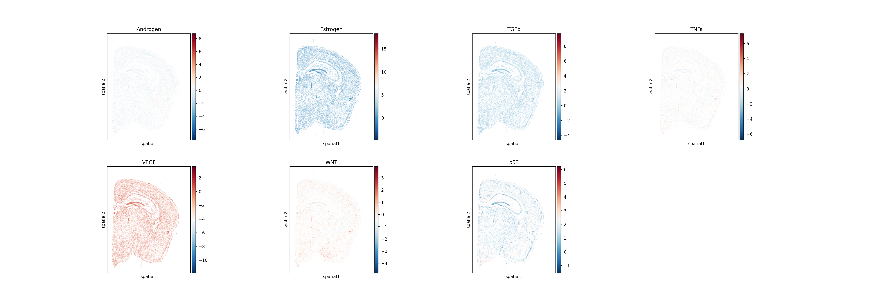
Condition: wildtype and time: 2_5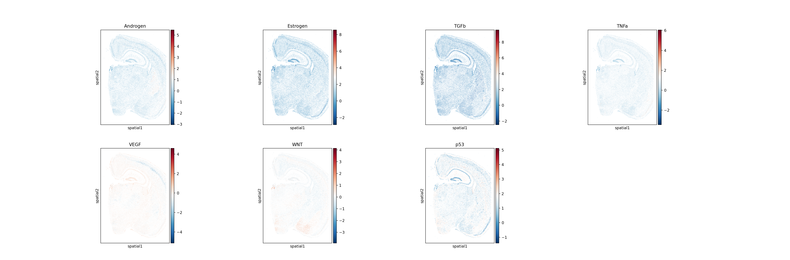
Condition: wildtype and time: 5_7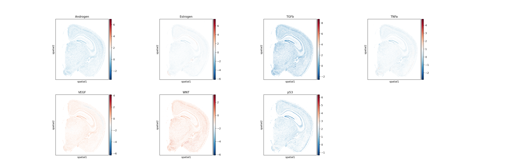
Condition: wildtype and time: 13_4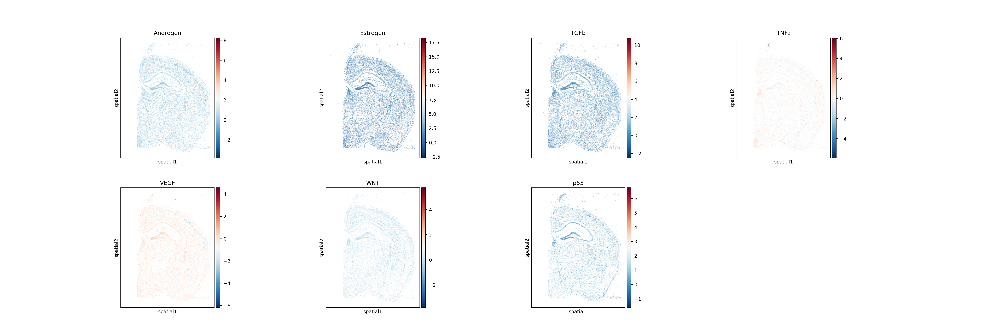
3.2. Format MISTy object
MISTy objects are in the MuData (Bredikhin et al., 2021) object with one modality per view.
The intra view is the target variable
adataAnnData object with n_obs × n_vars = 350209 × 347
obs: 'cell_id', 'transcript_counts', 'control_probe_counts', 'control_codeword_counts', 'unassigned_codeword_counts', 'total_counts', 'cell_area', 'nucleus_area', 'region', 'cell_labels', 'condition', 'time', 'batch_key', 'leiden_res0_25', 'leiden_res0_5', 'leiden_res1', 'cell_types', 'sample'
var: 'gene_ids', 'feature_types', 'genome'
uns: 'cell_types_colors', 'dea_leiden_res0_25', 'dendrogram_leiden_res0_25', 'leiden', 'leiden_res0_25_colors', 'leiden_res0_5_colors', 'leiden_res1_colors', 'neighbors', 'umap'
obsm: 'X_pca', 'X_umap', 'spatial', 'mlm_estimate', 'mlm_pvals'
layers: 'counts', 'median_ft'
obsp: 'connectivities', 'distances'cell_assignments = adata.obs['cell_types'].astype(str)np.unique(cell_assignments)array(['Astrocytes', 'Excitatory neurons', 'Inhibitory neurons',
'Microglia', 'OPC', 'Oligodendrocytes', 'nan'], dtype=object)import pandas as pd
import anndata as ad
one_hot_data = pd.get_dummies(cell_assignments)# Step 3: Create AnnData object
adata_ct = ad.AnnData(
X=one_hot_data.values, # One-hot encoding matrix
obs=pd.DataFrame(index=adata.obs_names), # Cells as `.obs`
var=pd.DataFrame(index=np.unique(cell_assignments)), # Cell types as `.var`
)
adata_ct.obsm['spatial'] = adata.obsm['spatial']# check key cell types
# sc.pl.spatial(adata_ct,
# color=['OPC'],
# size=1.3, ncols=2, alpha_img=0,
# spot_size = 10
# )misty = genericMistyData(intra=adata_ct, extra=acts_progeny, cutoff=0.05, bandwidth=200, n_neighs=6)
misty/home/icb/francesca.drummer/miniconda3/envs/ccc_liana/lib/python3.9/site-packages/anndata/_core/anndata.py:522: FutureWarning: The dtype argument is deprecated and will be removed in late 2024.
/home/icb/francesca.drummer/miniconda3/envs/ccc_liana/lib/python3.9/site-packages/anndata/_core/anndata.py:522: FutureWarning: The dtype argument is deprecated and will be removed in late 2024.
/home/icb/francesca.drummer/miniconda3/envs/ccc_liana/lib/python3.9/site-packages/anndata/_core/anndata.py:522: FutureWarning: The dtype argument is deprecated and will be removed in late 2024.
/home/icb/francesca.drummer/miniconda3/envs/ccc_liana/lib/python3.9/site-packages/mudata/_core/mudata.py:491: UserWarning: Cannot join columns with the same name because var_names are intersecting.
/home/icb/francesca.drummer/miniconda3/envs/ccc_liana/lib/python3.9/site-packages/liana/method/sp/_misty/_Misty.py:80: ImplicitModificationWarning: Setting element `.layers['weighted']` of view, initializing view as actual.
/home/icb/francesca.drummer/miniconda3/envs/ccc_liana/lib/python3.9/site-packages/liana/method/sp/_misty/_Misty.py:80: ImplicitModificationWarning: Setting element `.layers['weighted']` of view, initializing view as actual.MuData object with n_obs × n_vars = 350209 × 27
3 modalities
intra: 350209 x 5
obsm: 'spatial'
juxta: 350209 x 11
obsm: 'spatial'
layers: 'weighted'
obsp: 'spatial_connectivities'
para: 350209 x 11
obsm: 'spatial'
layers: 'weighted'
obsp: 'spatial_connectivities'
3.3 Learn relationship with MISTy
Now that we have constructed the object, we can learn the relationships across views.
Reationships can be learned by different models (e.i. RandomForrest, LinearModel). The fastest is the Linear model which we will fit here for each target in the intra-view, using the juxta and para views as predictors.
misty(model=LinearModel, k_cv=10, seed=1337, bypass_intra=True, verbose = True)Now learning: nan: 100%|██████████| 5/5 [00:44<00:00, 8.89s/it] By default the results are saved in the misty object because inplace = True.
The misty object does now contain two DataFrames:
target_metricsinteractions
li.pl.target_metrics(misty, stat='gain_R2', return_fig=True)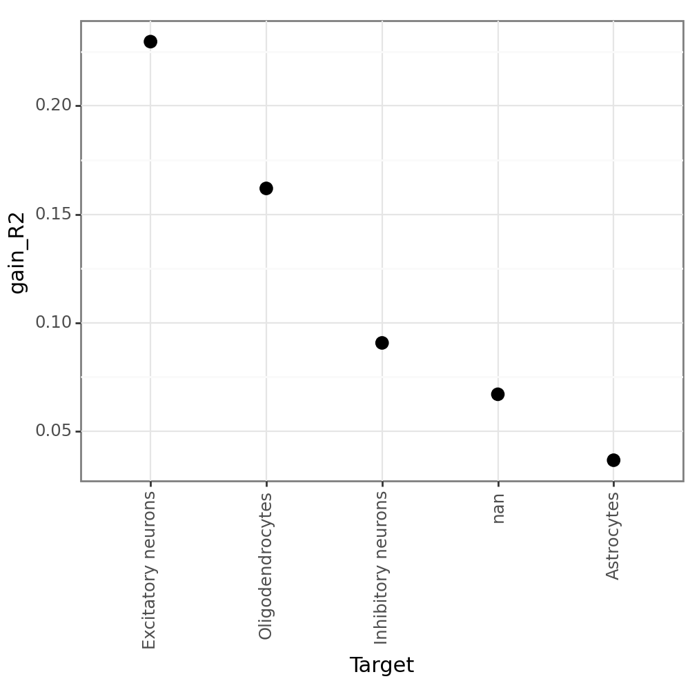
li.pl.contributions(misty, return_fig=True)Fontsize 0.00 < 1.0 pt not allowed by FreeType. Setting fontsize = 1 pt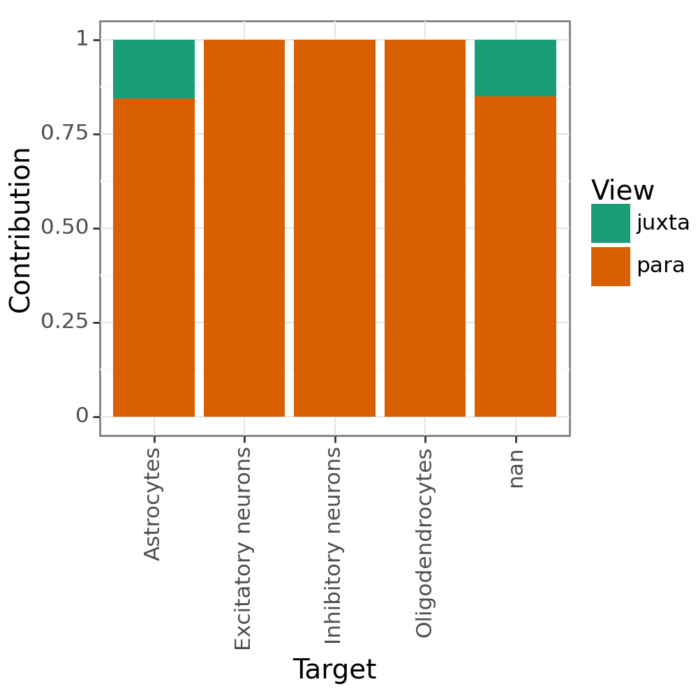
(
li.pl.interactions(misty, view='juxta', return_fig=True, figure_size=(7,5)) +
p9.scale_fill_gradient2(low = "blue", mid = "white", high = "red", midpoint = 0)
)Fontsize 0.00 < 1.0 pt not allowed by FreeType. Setting fontsize = 1 pt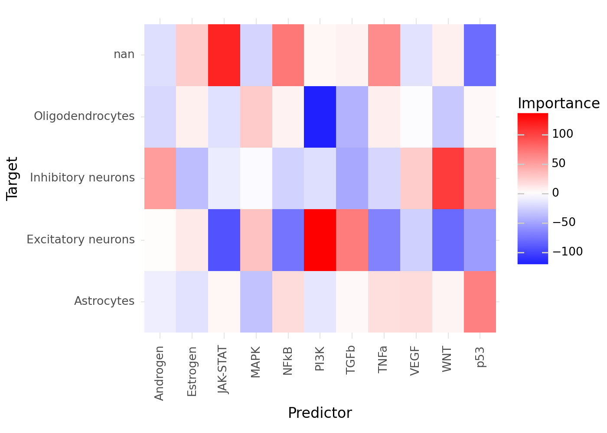
Fit a RandomForestModel instead. How does it effect the results and their interpretability?.
References
[1] Dimitrov D., Schäfer P.S.L, Farr E., Rodriguez Mier P., Lobentanzer S., Badia-i-Mompel P., Dugourd A., Tanevski J., Ramirez Flores R.O. and Saez-Rodriguez J. LIANA+ provides an all-in-one framework for cell–cell communication inference. Nat Cell Biol (2024). https://doi.org/10.1038/s41556-024-01469-w
[2] Li, Z., Wang, T., Liu, P. & Huang, Y. SpatialDM for rapid identification of spatially co-expressed ligand–receptor and revealing cell–cell communication patterns. Nat Commun 14, 3995 (2023).
[3] Bredikhin, D., Kats, I. & Stegle, O. MUON: multimodal omics analysis framework. Genome Biol 23, 42 (2022). https://doi.org/10.1186/s13059-021-02577-8